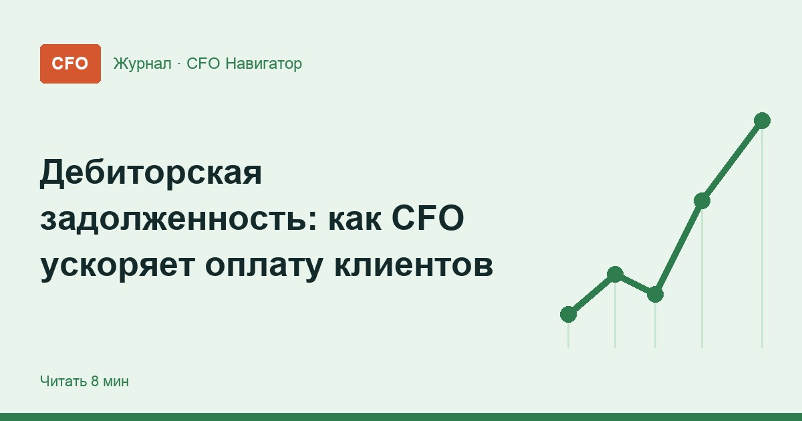

Дебиторская задолженность: как CFO ускоряет оплату клиентов

Отгрузка ещё не деньги. Пока покупатель не заплатил, выручка существует только в отчёте, а зарплату и налоги платить нужно уже сейчас. Финансовый директор отвечает за то, чтобы долги клиентов возвращались вовремя, — и делает это не звонками «по настроению», а через понятные правила для продаж, бухгалтерии и юристов.
Почему дебиторка — задача финансового директора
Дебиторская задолженность — это деньги, которые компании должны покупатели и заказчики за уже отгруженный товар или оказанные услуги. Сама по себе отсрочка — нормальный инструмент продаж. Проблемы начинаются, когда долги растут быстрее выручки, а сроки оплаты никто не контролирует.
Продавцы заинтересованы отгрузить, бухгалтерия — правильно провести, юристы подключаются, когда уже поздно. Связать эти звенья может только CFO. Как дебиторка влияет на весь оборот денег, мы разбирали в статье про оборотный капитал, а здесь — пошагово о том, как вернуть деньги быстрее.
Кредитная политика: правила до первой отгрузки
Большую часть просрочки можно предотвратить ещё до сделки. Для этого финансовый директор вместе с коммерческим отделом утверждает кредитную политику — короткий документ о том, кому, на сколько и на каких условиях компания даёт отсрочку.
- Проверка нового клиента. Данные о компании, судебные дела, история платежей с другими поставщиками — до того, как предлагать отсрочку.
- Кредитный лимит. Максимальная сумма долга на одного покупателя. При превышении новая отгрузка — только по предоплате или с согласования финансовой службы.
- Срок отсрочки. Единые стандартные сроки для групп клиентов вместо индивидуальных обещаний каждого менеджера.
- Условия в договоре. Точная дата оплаты, неустойка за просрочку и порядок претензии — всё это пригодится, если дело дойдёт до спора.
- Пересмотр. Лимиты и сроки пересматриваются по фактической платёжной дисциплине клиента, а не раз и навсегда.
Реестр долгов по срокам: видеть проблему заранее
Главный рабочий инструмент — реестр дебиторской задолженности по срокам (его ещё называют aging-отчётом). В нём каждый долг разложен по тому, сколько дней прошло с даты, когда клиент должен был заплатить. Чем старше долг, тем ниже шанс его получить и тем жёстче должны быть действия.
| Группа долга | Что происходит | Кто действует |
|---|---|---|
| Срок оплаты ещё не наступил | Нормальная отсрочка по договору | Менеджер: напомнить о дате оплаты заранее |
| Просрочка до 30 дней | Часто забыли или задержали платёж | Менеджер и бухгалтерия: звонок, письмо, акт сверки |
| Просрочка 30–60 дней | Клиент испытывает трудности или тянет время | Финансовая служба: стоп-отгрузки, график погашения |
| Просрочка больше 60 дней | Высокий риск не получить деньги | Юрист: претензия, затем суд |
Границы групп компания выбирает сама под свою отрасль и сроки отсрочки. Важно другое: реестр обновляется каждую неделю, а сумма просрочки и её доля в общей дебиторке входят в ежемесячную управленческую отчётность.
Порядок действий при просрочке
Что делать с просроченным долгом
- 1Напомнитьписьмо со счётом до даты оплаты
- 2Сверитьзвонок и акт сверки в первые дни
- 3Остановитьстоп-отгрузки и график погашения
- 4Взыскатьпретензия, затем суд
Чтобы работа с долгами не зависела от настроения конкретного менеджера, финансовый директор закрепляет её в регламенте: что делается в какой день, кто отвечает и когда подключается следующий уровень.
- Напоминание до срока. За несколько дней до даты оплаты клиенту уходит письмо со счётом — многие задержки просто от забывчивости.
- Контакт в первые дни просрочки. Менеджер выясняет причину и фиксирует новую дату оплаты письменно.
- Акт сверки. Подписанный акт подтверждает сумму долга и снимает спор о цифрах.
- Стоп-отгрузки. Новые поставки — только после погашения или по предоплате; правило должно соблюдаться для всех, без исключений «для хороших клиентов».
- График погашения. Если у клиента временные трудности, лучше договориться о рассрочке долга с датами, чем ждать без плана.
- Претензия и суд. Когда переговоры не дали результата, к делу подключается юрист.
Что важно знать о претензии и сроках
Для споров между компаниями о взыскании денег по договору закон требует сначала направить должнику претензию. По части 5 статьи 4 Арбитражного процессуального кодекса РФ обратиться в арбитражный суд можно по истечении тридцати календарных дней со дня её направления, если другой срок не установлен законом или договором.
Ещё одна граница — исковая давность. Общий срок по статье 196 Гражданского кодекса РФ — три года. Долг, о котором вспомнили слишком поздно, взыскать через суд может уже не получиться, поэтому старую дебиторку нельзя просто «держать в учёте».
Мотивация продаж и скидка за раннюю оплату
Самый сильный рычаг — связать интересы продавцов с поступлением денег. Если бонус начисляется за отгрузку, менеджеру выгодно отгрузить любому клиенту. Если за оплаченную выручку — он сам начнёт следить за платёжной дисциплиной.
- Бонус по факту оплаты. Премия за сделку начисляется, когда деньги пришли на счёт.
- Учёт просрочки в KPI. Доля просроченной дебиторки по клиентам менеджера снижает его премию.
- Скидка за раннюю оплату. Имеет смысл, только если она обходится дешевле, чем кредит на ту же сумму и срок.
- Факторинг. Банк или факторинговая компания выплачивает часть суммы сразу после отгрузки; финансовый директор сравнивает его стоимость с другими вариантами финансирования.
Медленная дебиторка — одна из частых причин, по которым при хорошей прибыли возникает кассовый разрыв. Поэтому прогноз поступлений от клиентов должен опираться на реальную платёжную дисциплину, а не на сроки из договоров.
Где научиться управлять дебиторкой и денежным потоком
Работа с задолженностью, платёжный календарь и прогноз денег разбираются в программах для финансовых директоров. Если базовые знания уже есть, удобнее точечно закрыть тему через повышение квалификации с удостоверением. Ниже — курсы, в программах которых есть блок по денежным потокам.
 Mini-MBA: Финансовый директор
Mini-MBA: Финансовый директор- Цена
- 180 250 ₽
- Срок
- 10 месяцев (16 модулей)
- Документ
- Удостоверение о повышении квалификации
 Финансовый директор + нейросети для финансиста
Финансовый директор + нейросети для финансиста- Цена
- 126 400 ₽
- Срок
- —
- Документ
- Диплом о профессиональной переподготовке
 Финансовый директор. Управление финансами организации
Финансовый директор. Управление финансами организации- Цена
- 59 900 ₽
- Срок
- 3 дня
- Документ
- Удостоверение о повышении квалификации или сертификат MBS
 Как учиться на финансового директора без отрыва от работы
Как учиться на финансового директора без отрыва от работы Первые 90 дней финансового директора в новой компании
Первые 90 дней финансового директора в новой компании Финансовые риски компании: какие бывают и как ими управляет CFO
Финансовые риски компании: какие бывают и как ими управляет CFO